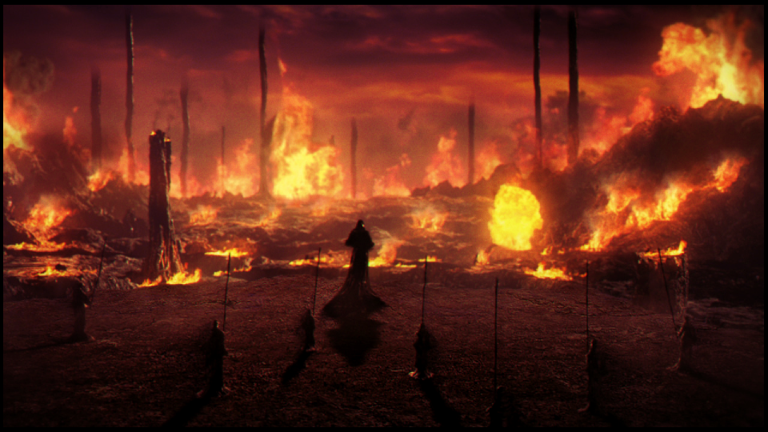

Dark Souls 1
Na era dos antepassados, o mundo era disforme, cercado por uma densa névoa. Uma terra de desfiladeiros cinzentos, árvores colossais e dragões perpétuos. Mas então surgiu fogo... e com o fogo vieram as divergências. Calor e frio, Vida e morte, e é claro... Luz e Trevas. Logo, ''eles'' surgiram da escuridão, e encontraram a alma dos Lordes no interior do fogo. Nito, o patriarca dos mortos. A Bruxa de Izalith, e sua irmandade do Caos. Gwyn, o senhor do Sol, e seus leais cavaleiros. E o furtivo Pygmy, tão facilmente esquecido. Com o poder dos Lordes, eles desafiaram os dragões. A chuva de trovões de Gwyn partiram suas escamas de pedra. A irmandade do Caos lançou uma onda de tempestades de chamas. Nito liberou um miasma de morte e enfermidades. E Seath o Sem-escamas, traiu a sua própria espécie. Os dragões foram extintos. E então, começou a Era do Fogo.
 Mas logo as chamas vão se apagar, e apenas as Trevas irão restar. Até agora, só existem cinzas, e os homens não vêem luz, mas apenas noites inacabáveis. E entre os que restam vivos, se encontram os portadores do sinal obscuro." "O Sinal obscuro significa um Morto-vivo amaldiçoado. Aqueles que o possuem são revividos após à morte, mas um dia vão perder a consciência e tornar-se um Hollow."